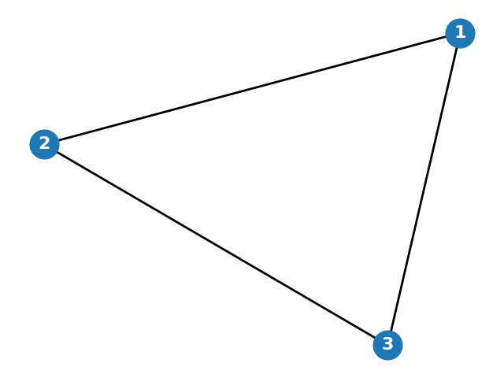

Which of the following is NOT a valid definition of an undirected graph?
Which of the following statements is TRUE about a path in a graph?
What is the difference between a tree and a forest in graph theory?
In a graph, what does the equivalence relation \( \leftrightarrow \) signify?
In a directed graph, which of the following is true about the edges?
Consider the following graph:
What is the adjacency matrix of this graph?
What is the Laplacian matrix of the graph in Q5?
Which of the following is NOT a property of the Laplacian matrix of a graph?
Which matrix representation of a graph is typically symmetric?
What characterizes a strongly connected directed graph?
In a weighted graph, how is the degree of a vertex \( i \) defined?